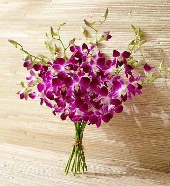

The orchid plant (Orchid Phalaenopsis) is a butterfly orchid, an indoor plant that is a flowering shrub with many, gradual, and very attractive colors, native to Southeast Asia, India, the Philippines and North Australia, and its genus includes a large number of species that may reach 22,000 species, its flowers combined in the form of spikes, numbering from 6 to 15 flowers and may increase, and its colors are white and pink, violet and yellow, its leaves are flat, thick, dark green, surrounding the flower holder, and it has produced of them by modern means types that are easy to care for in homes.